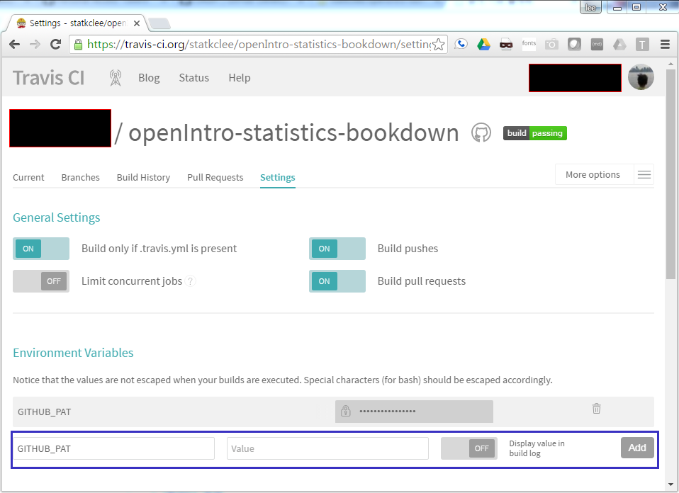

데이터 과학을 위한 저작도구
출판 자동화(DevOps)
1. 트래비스(Travis) 연결 1
- GitHub PAT(Personal Access Tokens)를 생성한다.
Generate New Token을 생성한다.- 외부에 공개되는 만큼 최소 보안 원칙을 지켜 가능하면 최소한의 권한으로 한다. 즉, 최소권한 원칙 2, GitHub Developer API OAuth를 확인한다.
- 권장하는 것은 어떤 권한도 부여하지 않는 것이다.
- 생성한 키를 복사한다.
- 트래비스(Travis) 저장소로 접근해 들어간다.
- 사전에 GitHub과 트래비스(Travis)를 연동한다.
- GitHub과 트래비스 연동된 경우 트래비스 저장소에 해당사용자의 모든 GitHub 저장소가 표시된다.
- GitHub PAT(Personal Access Tokens)에서 생성한 토큰을
GITHUB_PAT환경변수(Environment Variable)에 추가한다.
